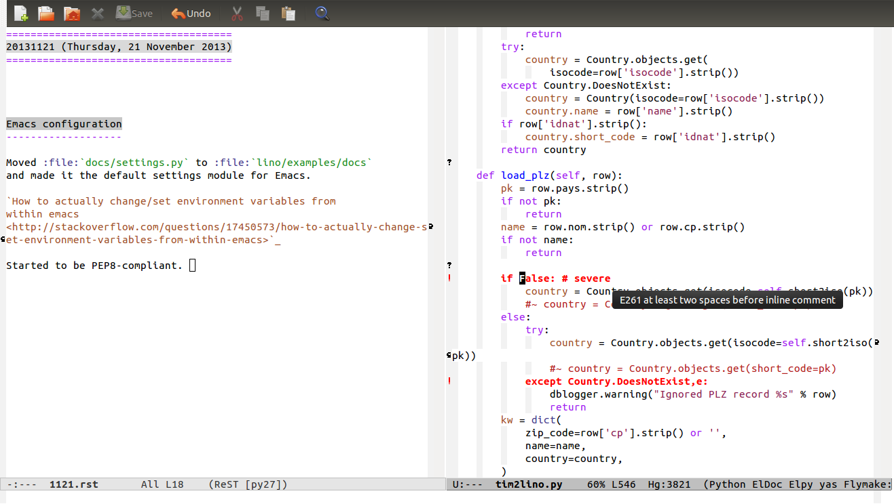

20131121 (Thursday, 21 November 2013)¶
Continued Importing legacy data from TIM to Lino¶
The “Sector” project (Importing legacy data from TIM to Lino and Lino Così) is getting into a final phase! Soon I’ll invite Andreas to a visit.
Some problems yet to solve:
- the invoices generate only two movements, the one for the vat is missing.
- how to make get_vat_rate configurable. Should there be a VAT plugin instead of the SiteMixin? It must also receive the date.
Emacs configuration¶
Actually I wanted to continue with Importing legacy data from TIM to Lino... but (cool:) Emacs now paints everything red that is not compliant with PEP8.
And of course nobody wants to work in such code! (Joe: “I know it
would be quite a change, but I think it is worth the trouble, because
Python programmers tend to avoid code not formated using PEP8 or
something very similar.”) So I started to manually convert code to
look PEP8-compliant. The first victim is
lino.projects.presto.fixtures.tim2lino.
Many warnings are about missing whitespace after ‘,’, which I perceive as rather nitpicky. For example:
def load_fin(self,row,**kw):
self.FINDICT[(jnl,year,number)] = doc
is not compliant. Must be:
def load_fin(self, row, **kw):
self.FINDICT[(jnl, year, number)] = doc
Maybe there is a way to tell Emacs to ignore certain warnings? Because such changes should rather not come together with “real” changes.
Should I tell Emacs to remove trailing spaces automatically? Here is the same problem: such changes should rather not come together with “real” changes.
Moved docs/settings.py to lino/projects/docs
and made it the default settings module for Emacs.
How to actually change/set environment variables from within emacs

{kind=link}